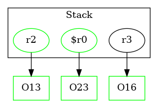

-1 : r2 := @parameter0: Test1Node
-1 : r3 := @parameter1: Test1Node
23 : $r0 = new Test1Node
23 : specialinvoke $r0.|Test1Node: void |init|()|() -> class soot.jimple.internal.JInvokeStmt
23 : r1 = $r0
24 : r2.|Test1Node: Test1Node f| = r1
25 : return
